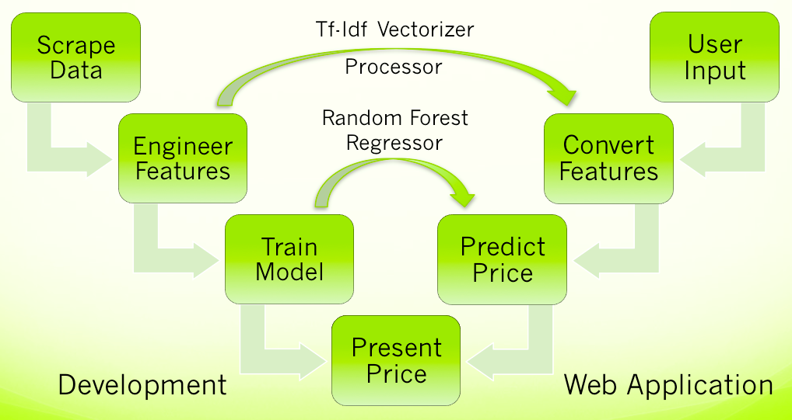

Determine The Price Tag
https://github.com/guetgs/PriceYourHorse
Under the hood, PriceYourHorse relys on a regression model based on thousands of ads scraped from www.equinenow.com. Under the hood, PriceYourHorse relys on a regression model based on thousands of ads scraped from www.equinenow.com. The continuous features hight, temperament and age serve as untransformed features. The categorical variables breed, color and sex are mapped to cumulative categories, thereby reducing the feature space, and serve as dummy variables. The list of skills and disciplines is merged with the text description and vectorized using a tf-idf vectorizer. Based on feature importance analysis, a vocabulary of keywords represent the text features. In the web application, the user selects these keywords directly instead of entering a text description.
Using the selected features, a processor transforming categorical variables, a vectorizer transforming text data and a random forest regressor model are fit. These fitted elements transform and process the user selection in the web application. The displayed price corresponds to the ensemble prediction of the model. In addition, a graph visually presents the prediciton distribution of all individual decision trees fit by kernel density estimation.
The final model reaches a cross validation R^2 score of 0.4. This indicates that the model explains 40% of the variability in prices. However, there is a large fraction of remaining variability unexplained by the features of the horse that impairs the precision of the prediction.